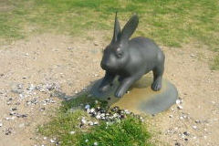

ルソーの見た夢、ルソーに見る夢
2007/05/04
県立美術館にルソー展を見に行きました。不思議な絵がいっぱいです。
チラシによると、幻想的で夢想家な作家とあったんですが、まさにそんな感じでした。
ちょっと可愛らしい感じなんですが、なんだか不気味なものや不思議なものが色々ありました。
ちょっと見てて難しいですね。
常設展では葛飾北斎の橋シリーズと滝シリーズが何点があったんですが、水の流れが綺麗で見ごたえがあって良かったです。
庭では2番目のウサギが大人気でした。お供えのシジミの殻がいっぱい落ちててちょっと汚いです。

誰がこんな話をしかけたんでしょうね？
島根県立美術館「田園への誘い」
2006/10/29
「田園への誘い」なので、風景+人物の絵が中心かなって思ってたんですが、18,19世紀の色んなタイプの絵画展示してありました。
色んなタイプのものが並んでいたので、全体的にどうこうっていうのはないんですけど、一度に色々見れるのって、自分の好き嫌いが解かっていいかもしれないですね。
どの作品も立派なものだと思いますけど、目について見入るものと、軽く流しちゃうものと差がよくわかりました。
個人的には前半は好きな感じのものが数点あったんですけど、後半はほとんど流しました。
次に美術館に行く時の、いい参考になります。
島根県立美術館のミッフィー展
2006/05/28
今日はミュージアムフェスティバル2006無料招待DAYだったので、ミッフィーにはあまり興味はないですけど、とりあえず行ってみました。
10時位に美術館に着くように出かけたんですが、駐車場はもう満車になってて、そこにいた警備員の人には「自力で駐車場を見つけて下さい」なんて言われてしまいました。もうちょっと早く行くか、最初に来た人が帰るくらいの時間に行けばよかったです。
ミッフィー展ってことで、小さいお子さんづれの家族が多くとっても賑わってました。いつもは静かな所なので、子供を連れて行くのはちょっとって気が引ける人も、無料招待デーは気兼ねなく行けるんじゃないでしょうか？走りまわってる子が沢山いたので、それが普通な感じでした。来年あるかはわかりませんが、気楽に行けるいいイベントです。（去年の無料開放デーのミュシャ展の時もガヤガヤしてました。）
ミッフィーですが、私はあんまりなじみがないので見ててもピンときませんでした。
買わなかったですが、ミッフィー展にちなんでニンジンのお菓子が売ってるのがちょっと気になりました。（地元の和菓子屋さんの商品だったかな）
島根県立美術館のミュシャ展
2005/09/18
9/18は県民感謝デーで、企画展も常設展も無料開放だったので喜んで見に行きました。
無料なのでいつもよりお客さんがとっても多かったです。
ミュシャ展ですが、展示品がとても多くとても見ごたえがありました。絵も大きいサイズのものが多いので、見るところがいっぱいです。
お客さんも多いかったのでちょっと疲れました。
それに比べて常設展の方は人がとっても少なかったです。
ちょっと寂しいですね。
私も前回見た時（1月前くらい）と内容がそんなにかわってないのでちょっと見て終了しましたけど。
来年も無料開放デーをやって欲しいですけど、他の日のお客さんが減っちゃうのできっと経営面で大変でしょうね。
島根県立美術館「サントリー美術館名品展」
2005/08/20
松江市袖師町の島根県立美術館で「サントリー美術館名品展 日本美術の精華」を見ました。
平安時代から江戸後期の作品が展示してあったんですが、素人的には見ててよくわからない作品が多くありました。
多くの作品が、美術品や工芸品って言うよりも骨董品って感じが強く、歴史を感じさせる作品だったため、説明がないとよくわからない感じでした。
なんでも鑑定団が好きな人にはいいかもしれませんね。
特にストーリー性のある屏風と絵巻物が多く展示してあったんですが、何をしているところ？って思う事がよくありました。
でも、花鳥画、薩摩切子、着物なんかはとても綺麗な作品で見ごたえがあって良かったです。
まさに「いい仕事してますねー。」な感じです。
国宝や重要文化財なんてなかなか実際に近くで見る機会がないですので、見に行かれるのもいいと思います。
8/28で終わっちゃいますので、行きたい方は見逃さないように注意してください。